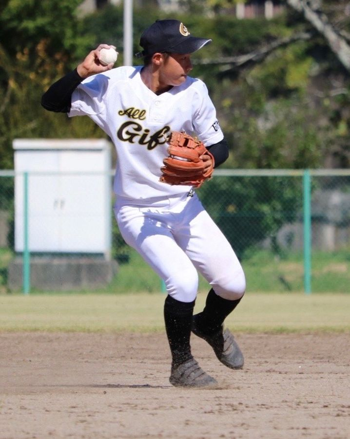
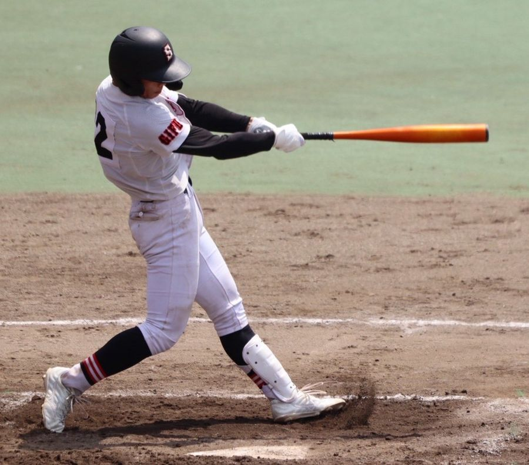
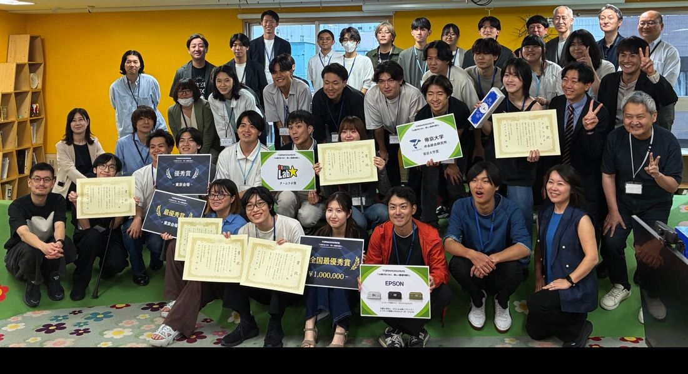
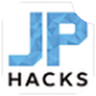
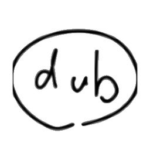
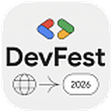
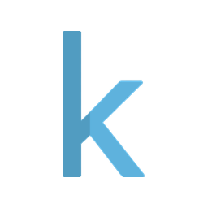
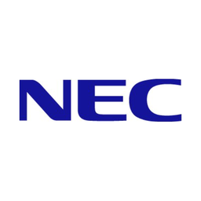

3yrs old
Starting baseball because of my dad
My father was part of the Chunichi Dragons cheering squad, and that is how I started playing baseball at age 3.

Kotaro Nagai
NAGAI KOTARO Kanazawa Institute of Technology, Intelligent Information Systems, 1st year
In the age of AI, I value real connections between people.
Using AI and people skills to build a Gifu without an AI gap.
From Gifu, Japan. The power of data and AI, and the power to build trust with people. These are the two lines I travel on.
From the day I first held a bat at age 3 until I entered university: the moments that made me who I am.
My father was part of the Chunichi Dragons cheering squad, and that is how I started playing baseball at age 3.
In junior high, I chose to play with my friends, and in my third year I was selected for the Gifu Prefecture all-star team. The frustration I felt there made me set my sights on Koshien in high school.


Right after earning a starting spot on the Sekishoko High School team, I got injured and could not play for about a year. I asked the coach if I could help as a data analyst and studied our opponents. In the end, I was trusted to plan the team's practice menu during tournaments. After I came back, we reached the top 4 in the prefecture in my final summer. Those three years taught me how grateful I am to my family for their support.


The road to success is doing the obvious things, obviously well, every time.Words from my high school coach
My data analysis experience made me feel that people who can use AI will be needed, so I joined Intelligent Information Systems at Kanazawa Institute of Technology. The rest of the story continues in the roadmap below.
This is my number one motto. Some things you only understand by trying, so I jump into hackathons, internships and outside courses. I have never teamed up with the same people twice at a hackathon, because learning how differently people think and work is what I value most.
This is my strength. Rather than finding problems from zero, I am good at bringing solutions to problems that already exist. Whether serving customers at Starbucks or building apps, I care most about listening and improving.
In high school I learned that feelings do not reach people unless you put them into words. I am a bit shy, so I still have not said it properly to my parents.
Through Gnomatic, I saw firsthand how far behind local companies are in AI and digital transformation. The gap between having AI and being able to use it is biggest outside big cities. First, I will join a global IT consulting firm in Tokyo, where I can grow the most, and learn from people across many industries. Then I want to start a business in Gifu and build a place where everyone can use AI with confidence.
Blue is the AI line and green is the people line. Stations where both lines meet are activities that used both. From today on, the lines are dashed and show my plans.
Long stations with a black outline are transfer stations between AI and people skills.
During about a year when I could not play because of injury, I analyzed our opponents. I learned both the power of data and the power of being trusted (Story).
Joined the Department of Intelligent Information Systems to study AI.
As a campus internship, I answer students' questions and manage lost items. Listening to the staff led me to build a shift management app.
In a team of six, we used morphological analysis to test whether writing changes with the time of day. Our team was selected at the final presentation.
President's AwardCompeting in machine learning competitions. Every Monday I present my progress and keep improving with advice from senior students.
Completed four courses: Large Language Models, Physical AI, Deep Learning and GCI Basic.
I try to make sure every customer leaves happy. Creating satisfaction through dialogue is also what I value most when building apps.
My first hackathon. I learned how hard idea generation is, and how fun it is to build something as a team.
Intro to AI Programming, Applied AI II (Natural Language Processing), Network Fundamentals and Intro to Business Thinking. Also completed two special math literacy courses.
As PM of a team of six, I planned Fitt0, a service connecting local problems with university students. I learned that value only reaches people when a good product can also make money.Intro video


Recommended for helping classmates learn together, including as a teaching assistant, and raising academic performance.
President's CommendationTop 4%. I iterated on features and parameters, mainly with LightGBM.
With senior students, I started meeting companies to hear their problems and give value back through IT. I felt that the further from big cities, the further behind AI and DX are.
Working with my old high school baseball team to build an app that visualizes their measurement data. Research theme: winter training and body composition of high school baseball players.

Competed in JPHACKS 2026Built "Ryoko Doko Ikou", a web app for choosing travel destinations from a map.
With no time to sleep and my legs at their limit, my friends and I helped each other to the finish.

Developers Hub : won sponsorsToward the September 2027 Hokuriku IT Conference, I met with many companies as part of the sponsor team.
A six-month program aiming for medals, mentored by Kaggle Grandmasters and Masters.

DevFest GDGoC Japan Hackathon 2026Building a product with Google Cloud and Gemini.
Rebuilt Student Station's shift management app for iOS. Installed it on my phone and a senior's, and we use it for real work. Next goal: release on the App Store.
Attending ABEMA Developer Conference. I will attend two before my second year to see how technology is used in the real world.
Release in December, with an admin screen for the people who build shifts as well as the staff screens.
Have staff actually use it, hear which features they want and what to fix, and improve it. Finish in March, ready for April.
Build speaking skills and measure my level with TOEIC. Attend a second tech conference in Tokyo.

1 Kaggle bronze medalWith mentors from LAIME Kaggle Dojo, focus deeply on one competition instead of many. First medal in my first year.
From the start of my second year, about 50 Student Station staff use it every day.

Co-op education at NECWork at a real company in the summer of my second year. Inspired by the founder of Data Dreamers, who learned a lot through NEC's co-op program.
As part of Developers Hub, create a place where students, engineers and companies connect.
Keep focusing on one competition at a time and win two silver medals.
Deliver results and lead people in the largest project on campus, with over 100 members.
Attend an overseas conference such as AWS, Google or NVIDIA at least once. Take on a summer internship at an IT consulting firm such as Accenture.
Win a gold medal in my third year and aim for Kaggle Grandmaster, the highest rank.
Establish analysis methods that can suggest training tailored to each player.
In the environment where I can grow the most and results are fairly rewarded, organize companies' problems with data and propose solutions through dialogue.
Terminal: start a business in Gifu and close the AI gapThe gap between people who can and cannot use AI is biggest outside big cities. I will bring back what I learned in Tokyo and, as a consultant, build a Gifu where everyone can use AI with confidence.
The projects from the roadmap I put the most into.
While working as student staff, I noticed how much effort it took to check and adjust shifts, so I built an app myself. It started as a web app, and now it is an iOS app that a senior and I use for real work.

A matching service that connects residents' small problems with university students who want to help. AI organizes each request and records the help given in words.
When I was a player, we measured data but had no way to visualize it. I am now solving that problem with an app and research.
A six-person team project comparing word patterns in essays written in the morning, at night and late at night using morphological analysis.
Courses, talks, internships, extracurricular projects and conferences outside class through KIT's Honors Program, each with a short note on what I took away.
Juyeong Ji, Google DeepMind Developer Experience Team
I learned that even cutting-edge AI is built from steady research and many small ideas from developers, and it made the technology feel close. I want to use this way of thinking in my own work and become an engineer who truly uses AI.
Prof. Tetsuya Yokotani
Takashi Mizuochi (Senior Fellow, Mitsubishi Electric)
I learned that students who act from their first year have more options, and felt how important it is to move early. This talk is what got me to start applying for long-term internships.
I learned that activities outside class and connections with people led to seniors' careers. I want to treat extracurriculars and hackathons as experiences that build my future.
I learned that ways of thinking from university are still used at work. I want to work backward from the way I want to work and decide what to do now.
Seniors with job offers shared how they did self-analysis and company research, and what they focused on in interviews.
A face-to-face roundtable with 15 young alumni
From now on, I want to hold events that help students and make this time count for my own growth.
We held a group discussion on arranging furniture to reduce earthquake damage. Everyone had a role, and I learned a lot.
A startup of five or six people founded by KIT graduates. I heard about apps they built, the future of the IT industry and job hunting. I want to put it to use.
The largest project on campus, with over 100 members. I work on machine learning competitions and get feedback from seniors at weekly progress meetings.
For the Hokuriku IT Conference in September 2027, I met with many companies on the sponsor team and won sponsors.
Every week I solve CTF problems to learn the basics of security.
Attended to hear the top teams explain their solutions directly.
What I felt along the way, in my own words at the time.
A person from industry told me that speaking is the most needed skill in cutting-edge development. I want to speak English, not just read and write it.I am also enjoying English in my Project Design English class.
In first interviews, my activities are appreciated. In technical interviews, I am not there yet. I know I am heading the right way, so I want to build my technical skills fast.
Hearing from companies at Gnomatic, I felt that the further from big cities, the further behind AI and DX are. Someday I want to bring that back to Gifu.
The 100 km walk. My legs were at their limit, but I made it because my friends were with me.
Tornado judges asked me how it would make money. No matter how good a product is, it means nothing if it does not reach people.